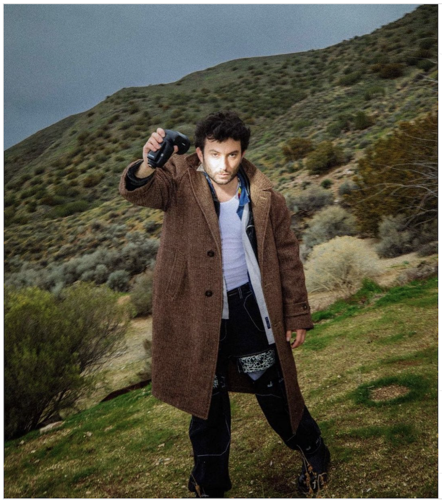

Ryder Ripps is an American conceptual artist, programmer, and creative director. Graduated 2008 from the New School, Ripps has spent his career collaborating with innovative artists across industries through his digital marketing and design agency, OKFocus. Ripps's fine art practice is described as "art that uses online avenues to expose how social media can amplify narcissism and fear". Ripps is the creative director of OKFocus, a digital marketing and design agency. He has created several websites, including Internet Archeology, Dump.fm, and VFiles, and has developed content for a number of contemporary musicians, fashion lines, and corporate brands such as Nike and Red Bull.
